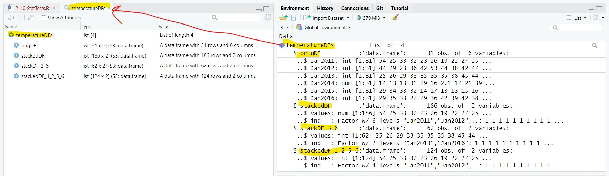
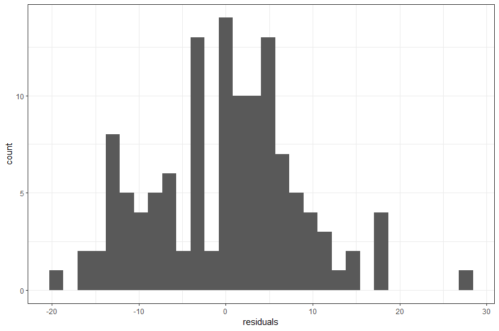
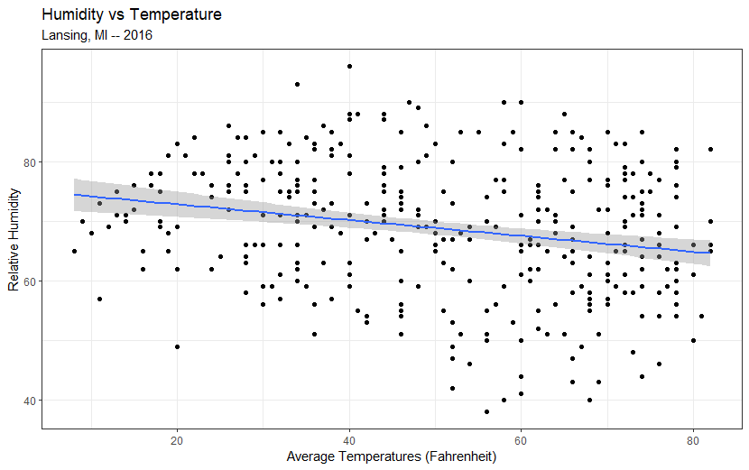

Stacking and Mapping
Objects and Attributes
The script for the lesson is here (right-click, save link as... -- put in scripts folder).
The List file created in the last lesson: tempDFs.rdata (just left-click -- put in data folder).
In previous lesson, we opened up a CSV file and saved the data to a data frame using read.csv(). In this lesson, we are going to use some of the data frames created in the last lesson -- data frames that were saved to a rdata file in the data folder of our project.
From last lesson:
# save(temperatureDFs, file = "data/tempDFs.rdata");
Now, let's open up the file using load():
load(file = "data/tempDFs.rdata");
Inside the rdata file is a List object, temperatureDFs, with four data frames. In the next couple lessons, we will be dealing a lot more with navigating and creating List objects. For now, a List object is a container for other object (like data frames). load() takes the objects from the rdata file and puts in the Environment:

The List object from the rdata file -- it is a carbon copy of the List object from last lesson
The data frames inside the List can be extracted just like a column can be extracted from a data frame. Let's extract the four data frame using the ( $ ) subset operator:
lansJanTempsDF = temperatureDFs$origDF;
stackedDF = temperatureDFs$stackedDF;
stackedDF2 = temperatureDFs$stackDF_3_6;
stackedDF3 = temperatureDFs$stackedDF_1_2_5_6;
This put the data frames directly in the Environment:
⮞ lansJanTempsDF: 31 obs. of 6 variables
⮞ stackedDF: 186 obs. of 2 variables
⮞ stackedDF2: 62 obs. of 2 variables
⮞ stackedDF3: 124 obs. of 2 variables
In the last lesson, we created line plot and box plot to display the temperature data. Let's be more formal about analyzing the data and do a two-sample t-test. In statistics, a two-sample t-test is used to determine if there is evidence that the means from two groups of values are different. In this case, we are asking if the columns (years) in the matrix, are statistically different.
Boxplot of temperature data from last lesson
We are going to compare the means from January 2012 (column 2) and January 2014 (column 4). -- two columns that, based on fig ##, do not look similar at all. To perform a t-test between these two years, we call the function t.test() and use the arguments x and y. x and y are set to the two columns we are comparing using the subset operator ( $ ).
tTest1 = t.test(x=lansJanTempsDF$Jan2012, y=lansJanTempsDF$Jan2014);
In the Environment tab, tTest1 is labelled as a "List of 10". We will dig more into this later. For now, we can get a helpful summary using the function print() and passing it the results of the t-test:
print(tTest1);
> print(tTest1);
Welch Two Sample t-test
data: lansJanTempsDF$Jan2012 and lansJanTempsDF$Jan2014
t = 4.7784, df = 59.561, p-value = 1.195e-05
alternative hypothesis: true difference in means is not equal to 0
95 percent confidence interval:
7.212138 17.600765
sample estimates:
mean of x mean of y
35.77419 23.36774
Printing the summary of the t-test in the Console tab
In the summary of the t-test it is stated that
We will do a second t-test between years that do look as similar in fig ## -- 2013 (column 3) and 2016 (column 6):
tTest2 = t.test(x=lansJanTempsDF[,3], y=lansJanTempsDF[,6]);
And, let's summarize the results of the t-test in the Console tab:
> print(tTest2);
Welch Two Sample t-test
data: lansJanTempsDF[, 3] and lansJanTempsDF[, 6]
t = 0.88083, df = 53.993, p-value = 0.3823
alternative hypothesis: true difference in means is not equal to 0
95 percent confidence interval:
-3.087414 7.926124
sample estimates:
mean of x mean of y
34.16129 31.74194
Printing the summary of the second t-test in the Console tab
In the summary of the t-test it is stated that
For tTest1 an tTest2, we used 2 different methods for subsetting a column in a dataframe. There are actually seven ways to subset a column in a dataframe.
This is because there are four different operators that you can use to subset a dataframe and for three of the operators you can use numbers or names:
All seven subsets below will produce the same results:
1) The row-column operator [ , ] using column numbers (also works on a matrix):
tTest2a = t.test(x=lansJanTempsDF[,2], y=lansJanTempsDF[,4]);
2) The row-column operator [ , ] using column names (also works on a matrix):
tTest2b = t.test(x=lansJanTempsDF[,"Jan2012"], y=lansJanTempsDF[,"Jan2014"]);
3) The single bracket operator [ ] using column numbers:
tTest2c = t.test(x=lansJanTempsDF[2], y=lansJanTempsDF[4]);
4) The single bracket operator [ ] using column names:
tTest2d = t.test(x=lansJanTempsDF["Jan2012"], y=lansJanTempsDF["Jan2014"]);
5) The double bracket operator [[ ]] using column numbers:
tTest2e = t.test(x=lansJanTempsDF[[2]], y=lansJanTempsDF[[4]]);
6) The double bracket operator [[ ]] using column names:
tTest2f = t.test(x=lansJanTempsDF[["Jan2012"]], y=lansJanTempsDF[["Jan2014"]]);
7) The dollar sign operator $ using column names (you cannot use $ with column numbers):
tTest2g = t.test(x=lansJanTempsDF$Jan2012, y=lansJanTempsDF$Jan2014;
The seven different ways to subset a dataframe
The operators in general (and in order of this author preference):
ANOVAs are similar to t-tests except they generally are used to test the means from three or more groups of data, whereas a t-test can only test the means from two groups. For comparison, we are going to start by using an ANOVA on 2 groups (Jan2013 and Jan2016).
ANOVAs are functionally similar to a t-test but R requires that the data be structured differently. In R, the ANOVA function aov() cannot compare values from different columns like t.test(). Instead aov() compares values within a column grouped by a second column.
In other words, to perform an ANOVA using aov(), you need to use a stacked dataframe and we will use the stacked dataframes created in the last lesson and loaded in from the rdata file.
Note: the reason why aov() requires a stacked data frame is largely a legacy issue
We will perform an ANOVA on stackedDF2, which contains data from Jan2013 and Jan2016 only, to check whether the temperatures from the 2 months are likely to be from the same distribution.
To perform an Anova using aov() you need two arguments:
Jan13_16_Anova = aov(data=stackedDF2, formula=values~ind);
To get the results of the ANOVA you need to print the summary of the Anova:
print(summary(Jan13_16_Anova);
Doing this in the Console tab, we get:
> print(summary(Jan13_16_Anova));
Df Sum Sq Mean Sq F value Pr(>F)
ind 1 91 90.73 0.776 0.382
Residuals 60 7016 116.94
ANOVA of the temperatures from 2012 and 2014
The results of the ANOVA show the probability that the temperatures come from the same distribution is 0.382 (38.2%). This, as expected, is the very close to the same probability (0.3823) that we got from doing the t-test between 2013 and 2016 and means we do not reject the NULL hypothesis that the groups come from the same distribution.
We are going to perform a second ANOVA on the 4 years (2011, 2012, 2015,and 2016) in stackedDF3 created in last lesson.
The Anova call looks almost the same:
Jan4MonthAnova = aov(data=stackedDF3, formula=values~ind);
Summarizing the ANOVA in the Console tab:
> print(summary(Jan4MonthAnova));
Df Sum Sq Mean Sq F value Pr(>F)
ind 3 1923 641.0 8.617 3.17e-05 ***
Residuals 120 8926 74.4
---
Signif. codes: 0 ‘***’ 0.001 ‘**’ 0.01 ‘*’ 0.05 ‘.’ 0.1 ‘ ’ 1
The results of the ANOVA show that the probability of the four sets of January temperatures coming from the same distribution is 3.17e-05, or 0.00317%. In this case, we reject the NULL hypothesis that the groups come from the same distribution.
Lastly, we can perform a histogram on the residuals of the ANOVA to show the we have not violated normality assumptions.
The residuals() function gets the 124 residuals from Jan4MonthAnova:
residuals: Named num [1:124] 28.387 -0.613 7.387 6.387 ...
We can then plot the residuals vector in a histogram by mapping the vector to x (the y-axis is count as does not get mapped):
residuals = residuals(Jan4MonthAnova);
plot1 = ggplot() +
geom_histogram(mapping=aes(x=residuals)) +
theme_bw();
plot(plot1);
... and this histogram looks fairly normal so we probably did not violated the normality assumption.

Histogram of the residuals from the second ANOVA
For linear regressions, we will be using the data from the bigger data set found in LAnsing2016Noaa-3.csv:
weatherData = read.csv(file="data/Lansing2016Noaa-3.csv");
In the GGPlot introductory lesson (2-01), we did a scatterplot of humidity vs. temperature using a geom_point component and added a linear regression using geom_smooth.
plot1 = ggplot(data=weatherData) +
geom_point( mapping=aes( x=avgTemp, y=relHum ) ) +
geom_smooth( mapping=aes( x=avgTemp, y=relHum ),method="lm" ) +
labs( title="Humidity vs Temperature",
subtitle="Lansing, MI -- 2016",
x = "Average Temperatures (Fahrenheit)",
y = "Relative Humidity") +
theme_bw();
plot(plot1);
The plot looks like this:

Scatterplot of humidity vs. temperature with a linear regression
We can also more formalize the calculation of the humidity vs. temperature linear regression using lm().
The argument we need to set for lm() is formula and formula is in this form: y ~ x
So, y is the humidity column and x is the temperature column:
tempHumLM = lm( formula = weatherData$relHum ~ weatherData$avgTemp );
We can print() the results to the Console and see the intercept is about 75 and the slope is about -0.13:
> print(tempHumLM);
Call:
lm(formula = weatherData$relHum ~ weatherData$avgTemp)
Coefficients:
(Intercept) weatherData$avgTemp
75.4863 -0.1326
The results seem to match the linear regression in the plot (fig ##) .
We can get a lot more information using print(summary()):
> print(summary(tempHumLM));
Call:
lm(formula = weatherData$relHum ~ weatherData$avgTemp)Residuals:
Min 1Q Median 3Q Max
-30.0624 -7.5984 0.3051 8.2171 25.8165Coefficients:
Estimate Std. Error t value Pr(>|t|)
(Intercept) 75.48632 1.61703 46.682 < 2e-16 ***
weatherData$avgTemp -0.13257 0.02988 -4.437 1.21e-05 ***
---
Signif. codes: 0 ‘***’ 0.001 ‘**’ 0.01 ‘*’ 0.05 ‘.’ 0.1 ‘ ’ 1Residual standard error: 10.88 on 364 degrees of freedom
Multiple R-squared: 0.0513, Adjusted R-squared: 0.04869
F-statistic: 19.68 on 1 and 364 DF, p-value: 1.213e-05
The slope and intercept are also in this summary. The R-squared value tells us that temperature explains about 5.13% (0.0513) of the variance in humidity and the p-value of 1.21e-05 (0.0000121) says we reject the NULL hypothesis that temperature is not a predictor of humidity. In other words, changes in temperature can predict some change in humidity.
If you have any questions regarding this application, feel free to email them to the instructor here. You can attach the whole Project Folder as a zipped file.
1) In the application, use at learn four different methods of subsetting a data frame from fig ##.
2) Based on the boxplot of all 6 years (fig ##), try to figure which three years would most likely come form the same distribution (i.e., the ANOVA would not reject the NULL hypothesis.
3) Using t-tests, find which year's January temperatures is most statistically similar to the temperatures from January 2014 (other than itself!).
4) Perform four linear models:
Save you script file as app2-10.r in the scripts folder of your RStudio Project for the class.
Answer the following in comments inside your application script: